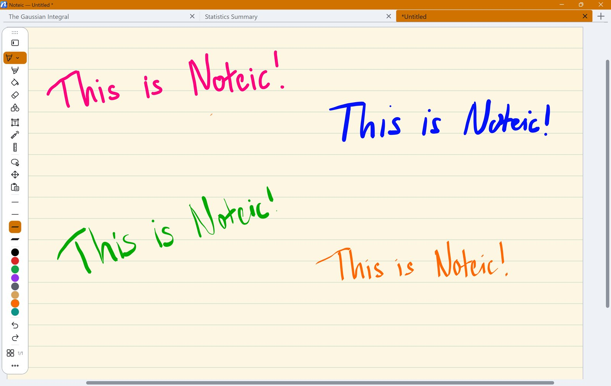

Pens
Three pens with their own feel: ballpoint, fountain pen and calligraphy pen. Each one keeps its own widths, colors and settings.

Choose a pen#
- Tap the pen button in the toolbar. It shows the pen you used last.
- Tap it again, or tap the small arrow at its bottom, to open the pen settings.
- Pick Ballpoint, Fountain pen or Calligraphy. The menu closes and you can write.
- Ballpoint: an even line. Pressure can be turned on or off.
- Fountain pen: always reacts to pressure.
- Calligraphy: a flat nib at 45°. The line gets thick or thin with the direction of your stroke, not with pressure.
Pen settings#
- Pressure sensitive (ballpoint and highlighter): press harder for a thicker line. On by default.
- Hold to straighten: at the end of a stroke, hold the pen still for about a second and the stroke becomes a straight line. It snaps to horizontal and vertical. Hold again after moving on to add a corner. Off by default.
Under … › Settings › Prediction you choose how far the ink runs ahead of the pen tip: Off, Gentle (the default), Full or Max. More prediction shortens the gap between tip and line, but can overshoot briefly when you lift the pen.
Widths#
The toolbar shows four widths, each drawn as thick as it writes.
- Tap a width to use it. If another tool is active, Noteic switches back to the pen.
- Tap the active width again to fine-tune it with a slider in millimeters: from 0.1 mm up to 2 mm for ballpoint and fountain pen, and up to 4 mm for the calligraphy nib.
- Switch palette swaps between two sets of widths.
Colors#
Eight colors are in the toolbar; you can show up to ten (see Customize the toolbar).
- Tap a color to use it.
- Tap the active color again to change it: pick one of 20 colors, or open the custom picker with a color field, a hue bar and a Hex box for codes like
#1F78EA. - Switch palette swaps between three palettes of ten colors each, per pen.
Pen ink is always fully opaque. For see-through color, use the highlighter or Fill.